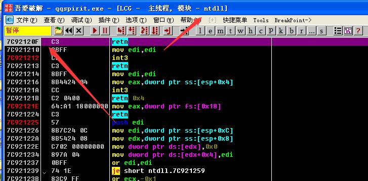
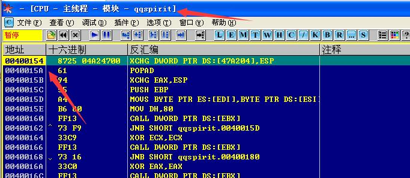
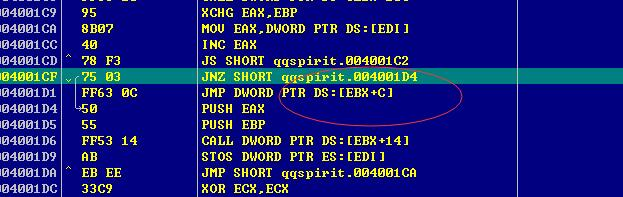
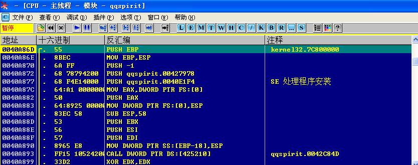
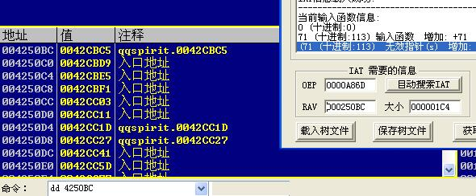
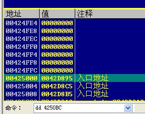
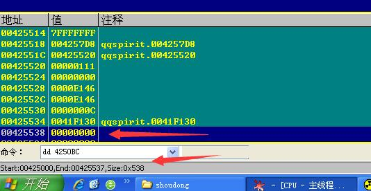
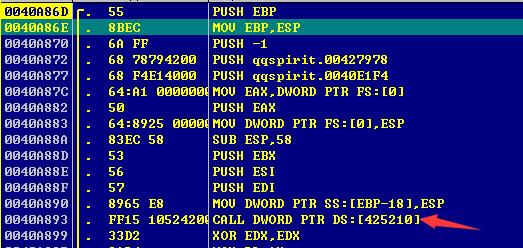

找OEP的一个小技巧
我们载入程序，但在这里我发现了一个小问题，我用之前的一个OD载入之后我进入的却是系统的领空，而且一直进入不了用户组的代码，如下图所示：

但是我重换了一个比较基础的OD却发现是停留在程序的领空，如下图所示：

这个时候我们先暂且不去深究这个的原因，之后再去研究具体的错误设置。
这个程序我们使用单步跟踪法来进行脱壳。
一步一步的往下跟踪，直到这个地方：

我们可以看到这个时候的jnz是准备跳过去，但是我们发现塔下一个CALL却是call了一个[EBX+C]，这个地方就是比较关键的地方，因为一般壳为了保护自身，都会喜欢将地址转换到一些寄存在加偏移的一个相对基址寻址的地方，我们修改我们标志寄存器的值，让他不进行跳转，然后步入，我们会进入这个地方：

这里我们比较要注意的地方是，OD在这个地方我们一般要进行分析代码，也就是Ctrl+A，有的时候壳非常喜欢这个寄存器间接跳转，我们可以用回车键，或者Ctrl+G跳转到那个位置，看看像不像，然后选择步入。
重建输入表
接着上面的，我们用我们常用的方法，进行dump，这里不演示了，我就直接脱掉。
这个时候我们在使用import REC的时候我们发现，貌似所有的函数都是无效的，这个时候我们就需要进行手动修改了，这里我提供两种方法：
第一种：快速搜索法
其实虽然import REC给我们的不是很正确，但是我们DD过去看一下：

这个时候我们自己定位一下，看一下上下方否是一片0的地方，从头拉到尾。


这个时候就是可以了的，我们输入起始的RVA：2500，大小0x538,这个大小如果不是太确定，我们可以使用1000，但不是太建议，特殊情况下不要了，这个时候我们常规方法进行dump。
第二种：CALL地址搜索法
这个方法比较直接，我们可以直接看他OEP下方CALL的地址，例如：

只要是下方的CALL地址就行，这个时候就到输入表的头部了，然后就可以了。